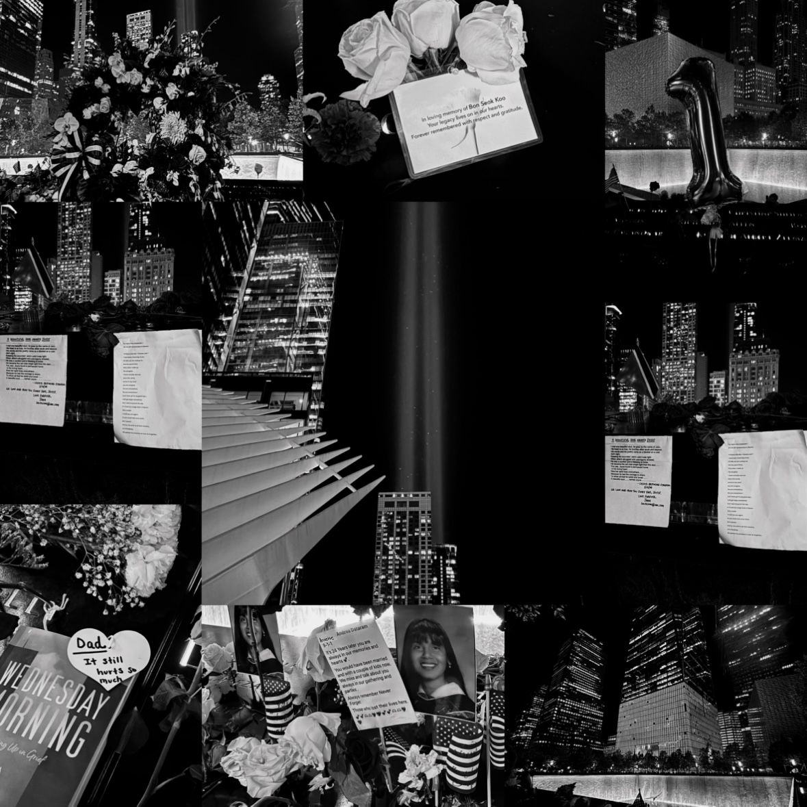

Back to main diary
September Eleventh, World Trade Center
This year marks the 24th anniversary of 9/11.
After class, as I was walking from school toward downtown, I saw two blue beams of light shooting toward the sky.
There are a lot of people at the World Trade Center tonight. Everyone is here to commemorate the lives lost twenty-four years ago.
The area surrounding the World Trade Center site was filled with a sorrowful atmosphere...
The two squares of ruins were filled with people.
Flowers were placed on the names carved into the ruins.
But those beautiful flowers simply bowed their heads.
The surrounding sounds seemed to vanish completely, the air frozen in place.
Only the sound of water gurgling into the deep pit remained.
I saw the words people left behind.
They were expressions of love, of longing, of words that could never be spoken in person again.
I saw:
Some people commemorated their friends. In the photo, the man stood in the sunshine, full of vigor and vitality.
Some people commemorated their nephews. Two young lives, two lives still in their infancy, passed away so quietly,
without anyone hearing their final cry.
Some people's love is like a bright red rose, and beneath the blooming rose are pages of implicit poetry full of love and regret.
The girl in her graduation gown smiled brightly...
"24 years later, you are always in our memories and hearts"...
I imagine this must be the parents' longing for their daughter.
"Maybe you should get married, maybe you should have children..."
I imagine these parents must have often dreamed of reuniting with their daughter
over the past 24 years.
The silver balloon with the number 1 swayed in the breeze,
reflecting the memory of someone who didn't get to see their children grow up and start a family.
A book, a simple heart-shaped card, and a simple sentence—all brought tears to my eyes: Dad, it still hurts so much.
How many lives have been lost like this?
Whose family, whose friends, treated it as just another day, without even a chance to say goodbye...
People from all over the world gathered here,
people of all colors, from children to the elderly:
An elderly person, supported by someone, wept, trembling
as they handed over flowers and gently stroked the name on the stone tablet;
a young girl, eyes wet, lay on the stone tablet, staring blankly into the distance...
Life is unpredictable.
I simply wish that my parents, my family, and my friends, all live long and healthy lives.
I simply wish that there will be no more tragedy in the world.
